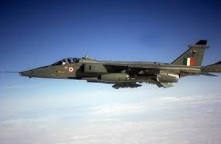
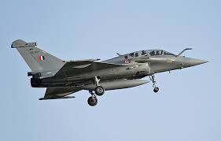

| Images : |
|---|

"A" flight of No 1. Squadron first saw action in April 1936, in Miranshah, in North Waziristan, flying reconnaissance missions and providing ground support against tribal insurgents in the North-West Frontier. No 1. Squadron was expanded in April 1939 to from a "B" flight, also equipped with Westland Wapiti biplanes

During World War II, the IAF played an instrumental role in halting the advance of the Japanese army in Burma, where the first IAF air strike was executed. The target for this first mission was the Japanese military base in Arakan, after which IAF strike missions continued against the Japanese airbases at Mae Hong Son, Chiang Mai and Chiang Rai in northern Thailand.